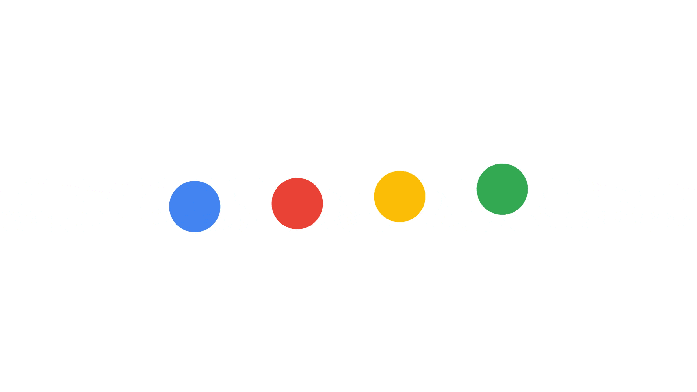
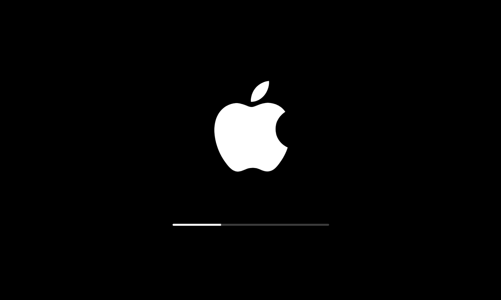

This might take a while

A throbber is an animated graphical control element used to show that a computer program is performing an action in the background. A throbber does not convey how much of the action has been completed.
Sit back and relax

A throbber is an animated graphical control element used to show that a computer program is performing an action in the background. A throbber does not convey how much of the action has been completed.
Just a moment

A throbber is an animated graphical control element used to show that a computer program is performing an action in the background. A throbber does not convey how much of the action has been completed.
Taking care of a few things

A throbber is an animated graphical control element used to show that a computer program is performing an action in the background. A throbber does not convey how much of the action has been completed.
Getting your files ready

A throbber is an animated graphical control element used to show that a computer program is performing an action in the background. A throbber does not convey how much of the action has been completed.
You usually have to wait for that which is worth waiting for

A throbber is an animated graphical control element used to show that a computer program is performing an action in the background. A throbber does not convey how much of the action has been completed.
It's the best part of the day

A throbber is an animated graphical control element used to show that a computer program is performing an action in the background. A throbber does not convey how much of the action has been completed.
Very soon

A throbber is an animated graphical control element used to show that a computer program is performing an action in the background. A throbber does not convey how much of the action has been completed.
Miracles come in moments.
Be ready and willing

A throbber is an animated graphical control element used to show that a computer program is performing an action in the background. A throbber does not convey how much of the action has been completed.
Almost getting there

A throbber is an animated graphical control element used to show that a computer program is performing an action in the background. A throbber does not convey how much of the action has been completed.
It's close
A throbber is an animated graphical control element used to show that a computer program is performing an action in the background. A throbber does not convey how much of the action has been completed.
Very close

A throbber is an animated graphical control element used to show that a computer program is performing an action in the background. A throbber does not convey how much of the action has been completed.
Life was always a matter of waiting for the right moment to act

A throbber is an animated graphical control element used to show that a computer program is performing an action in the background. A throbber does not convey how much of the action has been completed.
Somewhere, something incredible is waiting to be known

A progress indicator is is a graphical control element used to visualize the progression of an extended computer operation, such as a download, file transfer, or installation. Sometimes, the graphic is accompanied by a textual representation of the progress in a percent format.
Waiting for the spark from
heaven to fall

A progress indicator is is a graphical control element used to visualize the progression of an extended computer operation, such as a download, file transfer, or installation. Sometimes, the graphic is accompanied by a textual representation of the progress in a percent format.
Mars is there, waiting to be reached

A progress indicator is is a graphical control element used to visualize the progression of an extended computer operation, such as a download, file transfer, or installation. Sometimes, the graphic is accompanied by a textual representation of the progress in a percent format.
There's no such thing as failure
- just waiting for success

A progress indicator is is a graphical control element used to visualize the progression of an extended computer operation, such as a download, file transfer, or installation. Sometimes, the graphic is accompanied by a textual representation of the progress in a percent format.
The universe is full of magical things,
waiting for our wits to grow sharper

A progress indicator is is a graphical control element used to visualize the progression of an extended computer operation, such as a download, file transfer, or installation. Sometimes, the graphic is accompanied by a textual representation of the progress in a percent format.
Waiting is thee greating vocation of the dispossessed

A progress indicator is is a graphical control element used to visualize the progression of an extended computer operation, such as a download, file transfer, or installation. Sometimes, the graphic is accompanied by a textual representation of the progress in a percent format.
Waiting makes me restless
A throbber is an animated graphical control element used to show that a computer program is performing an action in the background. A throbber does not convey how much of the action has been completed.
When I'm ready, I'm ready
A throbber is an animated graphical control element used to show that a computer program is performing an action in the background. A throbber does not convey how much of the action has been completed.
The time will be just right

A throbber is an animated graphical control element used to show that a computer program is performing an action in the background. A throbber does not convey how much of the action has been completed.
The best is yet to come
A throbber is an animated graphical control element used to show that a computer program is performing an action in the background. A throbber does not convey how much of the action has been completed.
What is right to be done cannot be done too soon
A throbber is an animated graphical control element used to show that a computer program is performing an action in the background. A throbber does not convey how much of the action has been completed.
The world is full of genies waiting to grant your wishes

A throbber is an animated graphical control element used to show that a computer program is performing an action in the background. A throbber does not convey how much of the action has been completed.
A gentleman is simply a patient wolf

A throbber is an animated graphical control element used to show that a computer program is performing an action in the background. A throbber does not convey how much of the action has been completed.
Be patient and understanding

A progress indicator is is a graphical control element used to visualize the progression of an extended computer operation, such as a download, file transfer, or installation. Sometimes, the graphic is accompanied by a textual representation of the progress in a percent format.
Life is too short to be
vengeful or malicious
A progress indicator is is a graphical control element used to visualize the progression of an extended computer operation, such as a download, file transfer, or installation. Sometimes, the graphic is accompanied by a textual representation of the progress in a percent format.
Let the game come to you

A progress indicator is is a graphical control element used to visualize the progression of an extended computer operation, such as a download, file transfer, or installation. Sometimes, the graphic is accompanied by a textual representation of the progress in a percent format.
Don't rush

A progress indicator is is a graphical control element used to visualize the progression of an extended computer operation, such as a download, file transfer, or installation. Sometimes, the graphic is accompanied by a textual representation of the progress in a percent format.
Be quick, but don't hurry
A progress indicator is is a graphical control element used to visualize the progression of an extended computer operation, such as a download, file transfer, or installation. Sometimes, the graphic is accompanied by a textual representation of the progress in a percent format.
Better late than never
A progress indicator is is a graphical control element used to visualize the progression of an extended computer operation, such as a download, file transfer, or installation. Sometimes, the graphic is accompanied by a textual representation of the progress in a percent format.
The whistle is always
waiting to be blown

A throbber is an animated graphical control element used to show that a computer program is performing an action in the background. A throbber does not convey how much of the action has been completed.
If you're not too long, I will wait here for you all my life
A throbber is an animated graphical control element used to show that a computer program is performing an action in the background. A throbber does not convey how much of the action has been completed.
Still round the corner there may wait,
A new road or a secret gate

A throbber is an animated graphical control element used to show that a computer program is performing an action in the background. A throbber does not convey how much of the action has been completed.
Your mind will answer most questions if you learn to relax and wait
for the answer
A throbber is an animated graphical control element used to show that a computer program is performing an action in the background. A throbber does not convey how much of the action has been completed.
Waiting is a period of learning

A throbber is an animated graphical control element used to show that a computer program is performing an action in the background. A throbber does not convey how much of the action has been completed.
The longer we wait, the more we hear about him for whom we are waiting
A throbber is an animated graphical control element used to show that a computer program is performing an action in the background. A throbber does not convey how much of the action has been completed.
If you don't like the weather,
wait fifteen minutes

A progress indicator is is a graphical control element used to visualize the progression of an extended computer operation, such as a download, file transfer, or installation. Sometimes, the graphic is accompanied by a textual representation of the progress in a percent format.
Soon
A progress indicator is is a graphical control element used to visualize the progression of an extended computer operation, such as a download, file transfer, or installation. Sometimes, the graphic is accompanied by a textual representation of the progress in a percent format.
Don't leave
A progress indicator is is a graphical control element used to visualize the progression of an extended computer operation, such as a download, file transfer, or installation. Sometimes, the graphic is accompanied by a textual representation of the progress in a percent format.